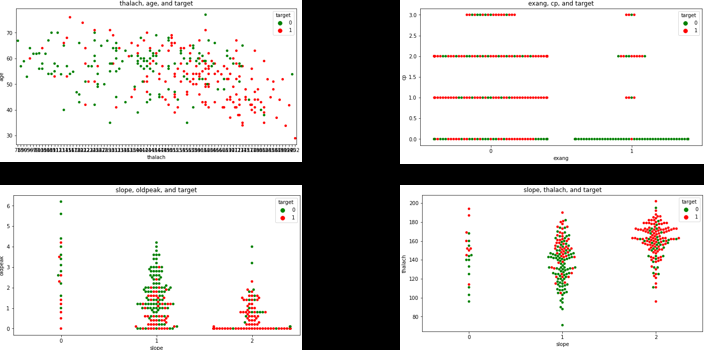

Heart Attack Data Analysis
This project, developed in Python, analyzed heart attack data which have been organized into 14 variables used by all published experiments: age, sex, chest pain type, resting blood pressure, serum cholesterol, fasting blood sugar, resting electrocardiographic results, maximum heart rate achieved, exercise induced angina, ST depression induced by exercise relative to rest, slope of the ST segment, number of major vessels colored by flourosopy, thal, and the target value, which can be 0 (less chance of heart attack) or 1 (more change of heart attack). This program created a heatmap for correlation visualization, created swarmplot(s) of 2 variables of interest + target combinations, executed statistical analysis, and then fed relevant data into an SVM model tested by 10-fold cross validation to better understand which of these variables significantly affect(s) the probability of heart attack.


After visualization and statistical analysis, some of the variables that affect probablity of heart attack were determined to be mean maximum heart rate, exercise induced angina, and number of major vessels colored by flourosopy. The SVM model trained using these data was able to predict target values at around 70% accuracy.